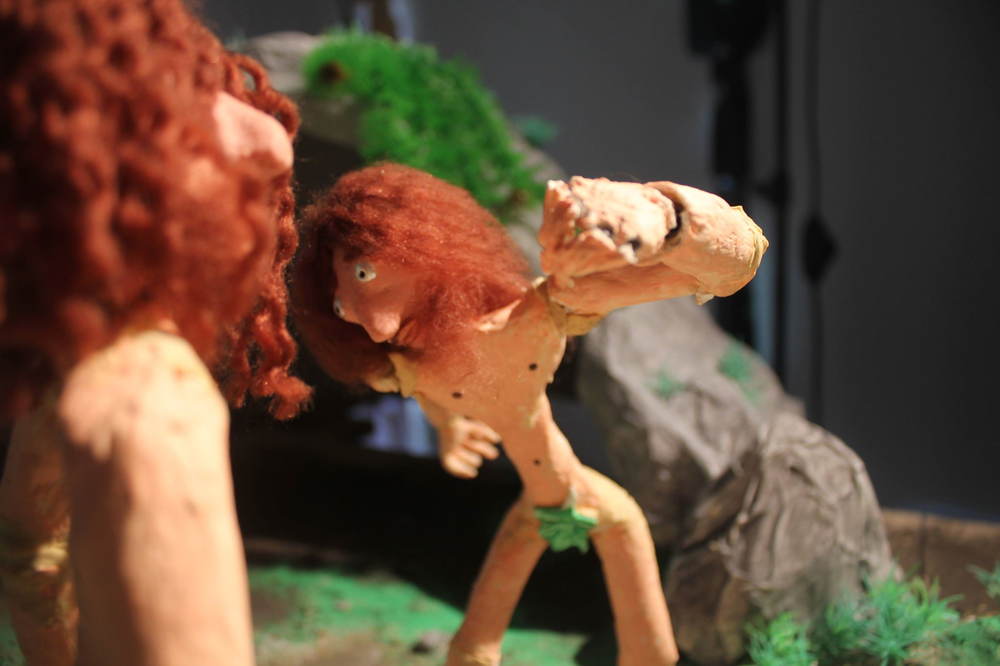
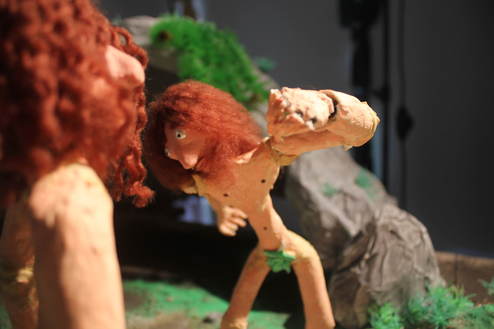

This was my first short film, I made ir with two friends.
We had never done anything in this technique and we wanted to try it. the result was this.
You can check it HERE
 

LUGGAGE are my most recent short that i made only with one friend.
You can check it HERE